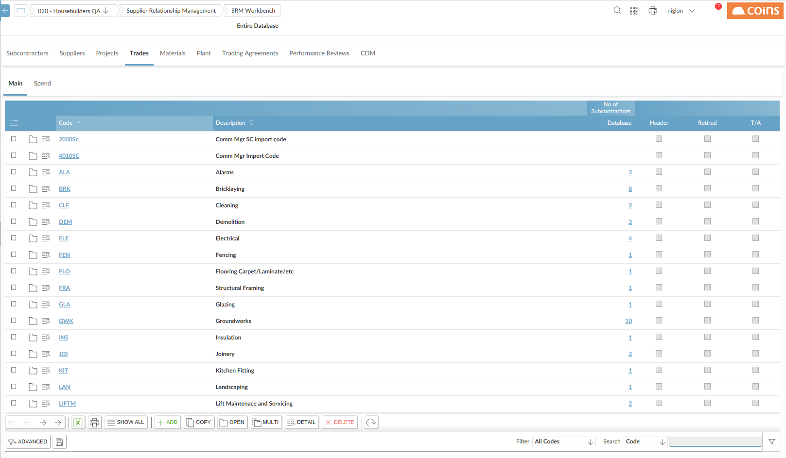
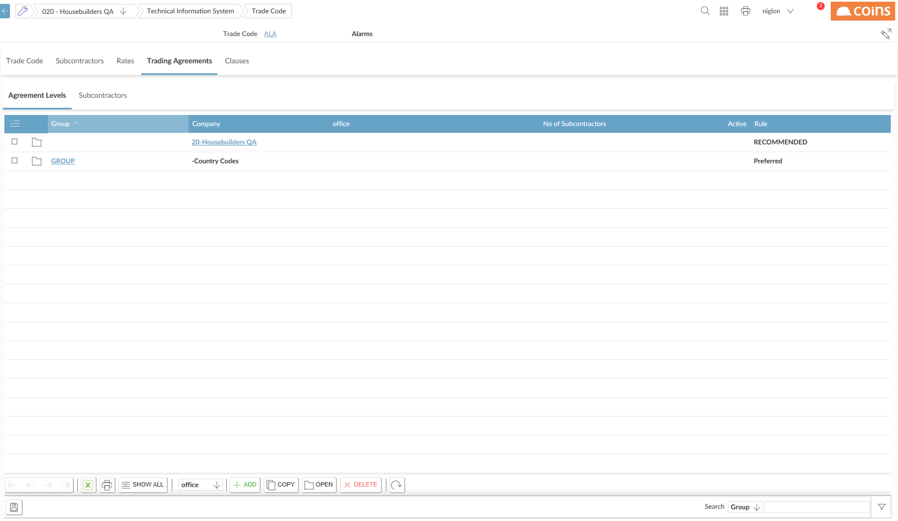

Trading Agreements
Trading agreements provide a method of coordinating and controlling supply chain policies. They are designed to control the raising of purchase orders for a specific commodity or trade, and provide retrospective monitoring of non-compliance within these agreements. You can on non-compliant order lines using the Non-Compliance subtab on the Trading Agreements tab in SRM Workbench.
You can set up agreements either to warn of breaches, or prevent breaches at point of order. For example, if you decide that Vodafone is your sole mobile phone , you can have a restricted agreement set up against the mobile phone commodity code for Vodafone; this would prevent orders from being raised against other . However, if you decide that Vodafone is your recommended , but you still want to allow mobile phone orders to be raised against other , you would have a recommended agreement.
provides the facility for agreements with up to five levels of detail (from group-wide down to level). When someone raises an order line for a commodity or trade for which an agreement exists, checks whether there is an agreement for the , then for the branch, and so on up to the general (group-wide) level. applies the lowest-level agreement that exists, and prevents the line, warns that there is an agreement, or allows the line, depending on the rule that applies for that agreement.
The Trading Agreement tabs are not restricted to companies in your user view.
Non-compliance
If you allow orders that are in breach of a trading agreement (whether or not warns about them), records any order lines that breach an agreement as being non-compliant. You can on any non-compliant lines: on the SRM Workbench Trading Agreements tab, the Non-Compliance tabs show any order lines that are in breach of a current trading agreement, and you can dig deeper to show the details of the order.
To set up trading agreements:
- Go to SRM Workbench.
- Click the Trades, Materials or tab.

- On the Main subtab, click the link for the trade, commodity or item for which you want to set up an agreement.
- On the Trading Agreements tab - Agreement Levels subtab, use the Add Type drop-down to choose the level at which you want to set up the agreement, and click
 .
.
- If relevant at that level, select the company, region or branch to which the agreement level applies.
- Select the rule for the agreement level. This determines whether allows non-compliant orders, and whether or not a warning is issued.

- Click
 .
.
The Trading Agreements tab on the main SRM Workbench allows you to maintain and add new trading agreements for trades and commodities for which trading agreements already exist, but not to add trading agreements for "new" trades or commodities.
To add or subcontractors to an agreement level:
- On the Agreement Level tab, click the link in the row for the agreement level you want to add the to. The link is in the column that represents the level to which the agreement applies.
- Click .
- Use the lookup to select the or subcontractor.
- Complete the other fields.
- Click .
Although trading agreements must be set up using , also checks for agreements when raising orders using .
Trading agreements - configuration
You need to set up the rules that can apply to trading agreements, using Trading Agreement Rules.
You can set up trading agreements at any of five levels: Group (that is, across ), , "Region", "Branch" and . The two levels above are configurable, and relate to the "buying region" and "branch" that are set up using JC parameters JOBREG and JOBBR. These denote which fields on the record uses to identify the region and branch a belongs to.
Trading agreements apply to -related orders (material, and subcontract) and also to overhead orders - though overhead orders cannot reference regional and branch agreements).
The field that identifies "region" would normally be the same across all . However, you could use different fields in different , and set JC/JOBREG as a -specific parameter. If a does not have the concept of region, leave JC/JOBREG blank for that . The same applies to "branch".
The SRM parameter TASCOPLB allows you to set the labels to use in SRM for the "region" and "branch" entities.